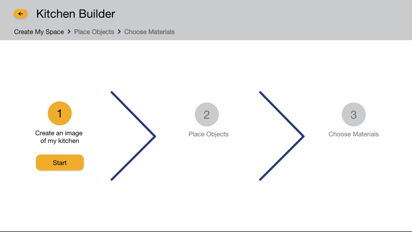
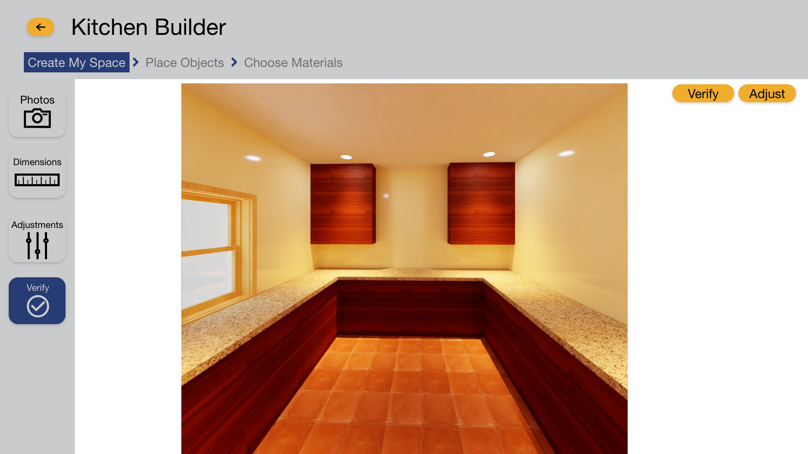
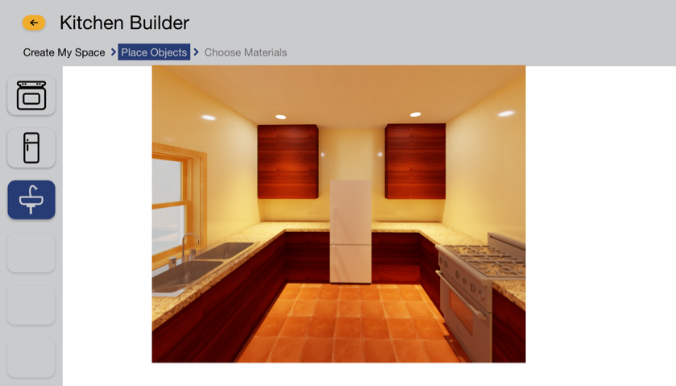

Kitchen Builder
Team: Philippe Meister, Shamika Pujari, Hunter Sabers
Executive Summary
Graphical fidelity is an understudied aspect of room-building applications offered by Ikea, Lowes, and Home Depot. We use Kitchen Builder to test whether users prefer to build a kitchen with low-fidelity (drafted) graphics or high-fidelity (photorealistic) graphics. Using two versions of Kitchen builder, we test whether the graphical fidelity influences user mental activity, satisfaction, and confidence. We did not find evidence of significant effects on mental activity, satisfaction, or confidence.
Introduction
There are companies that offer web-based services that allow users to build a room using the company’s product offerings. The companies that offer room design services are IKEA, Lowes, Menards, and Home Depot. The services typically allow the user to indicate the room shape by choose between a few options of room shapes. The room shape feature is useful because it helps the user develop a kitchen that resembles their own kitchen. The room shape features are not comprehensive because it forces to use a predetermined room shape that may not accurately resemble their kitchen’s shape. The services allow the user to insert the company’s product offerings into the room. The functionality is useful for the user if they want to source their products from the particular company. The functionality is lackluster if a user wants to source their products from more than one company. Finally, the services all provide a standard draft view that allows the user to place items into a specified space, while only some provide 3D views of the room.
Kitchen builder is a room-building application that is presented to users with two options of graphical fidelity. Fidelity refers to the degree of exactness with which something is copied or reproduced. Option one is a drafted (low fidelity) representation of the kitchen. Option two is a photorealistic (high fidelity) representation of the kitchen. Each option may present a benefit to users – the low-fidelity version allows users to build their kitchen by specifying every individual aspect of the design, but the high-fidelity version may add value to user inputs by including default colors and materials that the user can change later.
Graphical Fidelity
The research in this report focuses on the graphical fidelity of the visual representation of the kitchen. Fidelity degree of exactness with which something is copied or reproduced. Two reports frame the dynamics of graphical fidelity in this application. First, Gerling et al. (2013) studied graphical fidelity in games. They found that high fidelity graphics led to higher positive ratings of the game. They also found that high fidelity graphics were not needed for the game to be rated compelling or enjoyable. In their study, graphical fidelity was nice but not necessary for the users to use and enjoy the product. Second, Nehring (2009) studied graphical fidelity in nursing simulations for nursing education. Nehring found that graphical fidelity was a significant variable in participant’s nursing simulation experiences. Her study indicates that graphical fidelity may be important when the on-screen application has higher consequences in off-the-screen activities. In her case, it was very important for the simulation to accurately represent the nursing activity. In our application, we need to see if users prefer a high-fidelity representation in the kitchen building domain.
Hypotheses
The research presented in this paper addresses the users’ level of satisfaction and confidence while using the Kitchen Builder application. The first research objective is to evaluate the users’ level of satisfaction with the drafted (low-fidelity) and photorealistic (high-fidelity) visualizations in the Kitchen Builder application:
H0a: There is no difference in user satisfaction between the drafted and photorealistic visualizations.
H1a: There photorealistic condition will increase user’s satisfaction.
The second research objective is to evaluate the users’ level of confidence when they use the drafted and photorealistic artifacts to communicate with a contractor about their design:
H0b: There is no difference in the users’ confidence between the drafted and photorealistic visualizations.
H1b: There photorealistic condition will increase users’ confidence in communicating with the contractor.
System Description
Kitchen Builder supports users in carrying out three main tasks. First, users upload images to create a visual representation of their kitchen. Second, users add objects and appliances to their kitchen. Third, users add colors and materials to their kitchen. These three tasks comprise the base functionality of the system.
We implement Kitchen Builder as an Adobe XD prototype. The Prototype provides a click-through experience of the application’s main functions. The first step (creating the room) is pre-determined to control the room. In the second step (inserting furniture), users have control over the placement of furniture in the room. The third step is not included in testing because we are interested in testing the second step.



Evaluations
The first evaluation was done on prototype one with two expert users conducting heuristic evaluation. The heuristic evaluation allowed for early formative feedback on the project. The second form of evaluation was with potential users of the interface. This user-testing evaluated the users’ levels of satisfaction, confidence and mental activity.
First Evaluation
The first method used to evaluate the prototype was a heuristic evaluation. The choice to use a Heuristic Evaluation came from understanding the benefits of performing a heuristic analysis. The main benefits are early and effective design feedback. These benefits are appropriate for us because are at the early stage of our prototype. The early feedback will help us recalibrate our prototype to meet the needs of users. The right application of heuristics will help us identify most of the problems before furthering the design.
We started our procedure at the beginning with the initialize phase. We did not do the first step of the phase (forming the evaluation team) since this was given to us from class. We started by deciding on heuristics. We choose to use Nielsen & Molich nine heuristics. We debated whether any of the nine were appropriate for our situation, and whether we should add other heuristics, but in the end we setted with using the Nine heuristics from Nielsen & Molich. With the decision of the heuristic made, we moved to the final step of the initialize phase, which is providing a knowledge a creating a domain of the protype to be evaluated on by the evaluation team.
The next phase is the evaluation phase. Our group was given two in class evaluators conduce the heuristic analysis. Each evaluator went through the system on their own with some guidance from the team. The evaluators used all of the heuristics to find problems with the prototype and record them.
After the evaluators finished evaluating the prototype, the team moved to the next phase, which is to rate the severity of each error found. The severity of the issue is rated on a scale from zero (not a usability problem) to four (a usability catastrophe). The group went through the issues, discussed the issues, and rated each issue.
After every issue was rated for severity, the group conducted the final phase of the Heuristic Evaluation, which is to organize and debrief all of the information about the issues. In this phase, we discussed which issues will inform the design of the next prototype. The issues that informed the design of the next prototype included severe issues and less severe issues. We developed a recommendation for ourselves that we will use in the next stage of prototype development.
Second Evaluation
The second method used to evaluate the prototype with users. We gathered participants using a snowball-sample approach and randomly assigned them to one of the two conditions (low-fidelity or high-fidelity). We contacted six initial participants to participate in the evaluation. After these participants completed the evaluation, we asked them to recommend two other participants. The snowball-sample approach is appropriate for this experiment because it will attract people who have some investment with us or the topic. While a random sample may be desirable for evaluative feedback in other cases, we think the snowball will be more helpful for gathering participants quickly.
Participants
The users are representative of a young adult demographic (18-30) some are graduate students and some hold jobs.
Scenarios and Tasks
Participants will use the system to construct a space and insert appliances. After they use the system, they will have a conversation with a “contractor” about their redesign project. We will measure their interaction with the system as well as their interaction with the contractor.
Independent Variables (IV)
The independent variable is the level of fidelity of the visual representation of the kitchen. The options are drafted (lower fidelity) and photorealistic (higher fidelity).
Dependent Variables
Satisfaction, Mental Activity, Confidence level.
Procedure
The user arrives and briefed on the experiment. The user is told that the experiment is not IRB certified and the results will not be published and are only being used for the class project. The user signs a consent form was then reads a hand out that outlines the experiment and states the information being gathered. The user is told that they can leave at point during the experiment with no repercussion their self.
The user receives instructions about the object of the tasks to be completed. The first task is to renovate a kitchen from an existing drafted kitchen. This task includes two steps: (one) generating an image of the kitchen and (two) inserting furniture. After the user completes the task, they complete the usability, mental activity, satisfaction, and confidence surveys. The second task is to speak with a contractor about the redesign of the kitchen. The contractor asks a series of questions about the design of the kitchen. After the second task, the user completes a survey about their confidence while talking to the contractor.
Upon conclusion, the user is informed to contact the researchers if they have any question or concerns about the experiment. The researches then thanked thank the user and guide the user out of the testing environment.
Results
The methods evaluate three dependent variables: mental activity, satisfaction, and confidence. We report the measures of these variables between the drafted and photorealistic conditions. We expected users to have higher satisfaction and confidence in the photorealist condition. We did not formalize a hypothesis for the metal activity measure. We used a T-test to evaluate the differences between the conditions. The sections below provide the T-test results for each evaluation.
We failed to reject the null hypothesis for every evaluation. For every test, the p-value is greater than the significance level. There is not enough evidence to conclude that the difference between the population means is statistically significant. The figures below show the graphical representation of averages of responses along with the value of the standard variation. The value of P in T-test is greater than 0.05 hence, the drafted and photorealistic versions don’t have much statistically significant differences in terms of mental activity, confidence and satisfaction.
Mental Activity
An independent-sample t-test was conducted to compare the memory load in the drafted and photorealistic conditions. There was no significant difference in the scores for drafted (M=1.8, SD=0.748) and photorealistic (M=2, SD=0.707) conditions; t(7)=-0.36, p=.36. These results suggest that the fidelity of representation does not have an effect on the mental activity of users.
Confidence Level
An independent-sample t-test was conducted to compare the confidence level in the drafted and photorealistic conditions. There was no significant difference in the scores for drafted (M=3.8, SD=0.7) and photorealistic (M=4, SD=0.6) conditions; t(7)=-0.36, p=.36. These results suggest that the fidelity of representation does not have an effect on the confidence level of users.
Satisfaction
An independent-sample t-test was conducted to compare the confidence level in the drafted and photorealistic conditions. There was no significant difference in the scores for drafted (M=2.2, SD=0.748) and photorealistic (M=2, SD=0.707) conditions; t(7)=-0.36, p=.36. These results suggest that the fidelity of representation does not have an effect on the satisfaction level of users.
Discussion
In this study, the high-fidelity representation was not significantly preferred by the users. There was not a significant difference in users’ level of satisfaction. This was unexpected, as we expected the photorealistic condition to increase users’ level of satisfaction. We are skeptical of the results that there is no difference. We continue to think there is a difference that went undetected. It could be that our study did not impose effective constraints for users to value the photorealistic graphics. In order to come to a conclusion, we must increase the number of trials.
There was not a significant difference in user’s level of confidence. This also was unexpected, as we expected the photorealistic condition to increase users’ level of confidence. We are also skeptical of the results that there is no difference. We continue to believe that there should be a difference. It could be that the contractor’s conversation did not include enough to make the participant feel more or less confident in their responses (e.g., interrogative elements). Another option is that the system did not provide enough functionality for the user to feel ownership over their design.
We expected our results to align with Nehring (2009) who studied graphical fidelity in nursing simulations for nursing education. Nehring found that graphical fidelity was a significant variable in participant’s nursing simulation experiences. Her study indicates that graphical fidelity may be important when the on-screen application has higher consequences in off-the-screen activities. In her case, it was very important for the simulation to accurately represent the nursing activity. In our case, we though the graphical fidelity would be significant because the on-screen design would translate into an off-the-screen room. However, we did not observe the similar results. It possible that the same results will not be observed in this domina. However, we believe that there may be issues with the experimental design since participants were not designing their own kitchen. It's possible that participants did not think of this connection in a serious way.
Our results were more in line with Gerling et al. (2013) who studied graphical fidelity in games. They found that high fidelity graphics led to higher positive ratings of the game. They also found that high fidelity graphics were not needed for the game to be rated compelling or enjoyable. In their case, graphical fidelity was nice but not necessary for the users to use and enjoy the product. In our case, participants liked the high-fidelity graphics, but there were mixed results (and no significant results) about the value of high-fidelity graphics in the activity.
Recommnedations
We recommend conducting a third round of design and evaluation. In the third round, we would develop the prototype to take the user’s own photos as input, allow for changes in color, and allow for changes in materials. This will allow the user to become more invested in the design of the kitchen and accentuate differences between the drafted and photorealistic versions of the prototype. When we conducted the evaluation, we would gather a larger number of sample users with a varying ages and experiences to participate in the evaluation. It's important we capture users who own homes and want to redesign their kitchens. Increasing the number of participants will help to gather a better representation of the entire population of user and help identify the outliers in the data. It is important to lower the likelihood the outliers that may skew the results - a phenomenon that may have influenced our second evaluation of the types of prototypes.
References
- Gerling, Kathrin M. et al. “The Effects of Graphical Fidelity on Player Experience.” Proceedings of International Conference on Making Sense of Converging Media. 2013. DOI 10.1145/2523429.2523473
- Nehring, Wendy M. “Nursing Simulation: A Review of the Past 40 Years.” Simulation and Gaming, vol 40, no 4, 2009, pp. 528-552.